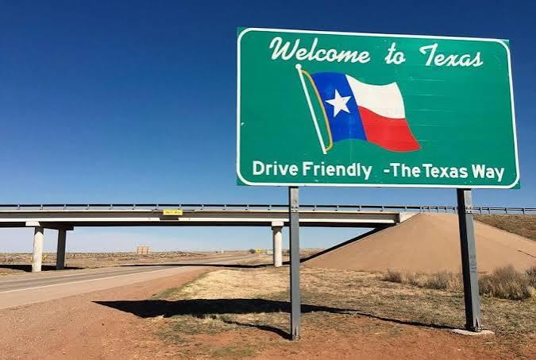

Everything's Bigger in Texas

Texas has always done things its own way. Before it became the 28th state in 1845, it spent nearly a decade as an independent republic, and that independent streak still shapes its identity as the “Lone Star State.” Today it’s the second-largest state in both land area and population, home to more than 30 million people spread across booming cities like Houston, Dallas, San Antonio, and the capital, Austin.
Built by Parker Jefferson · BMIS 235